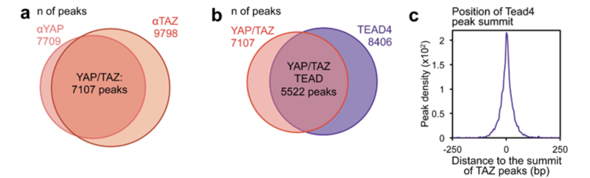
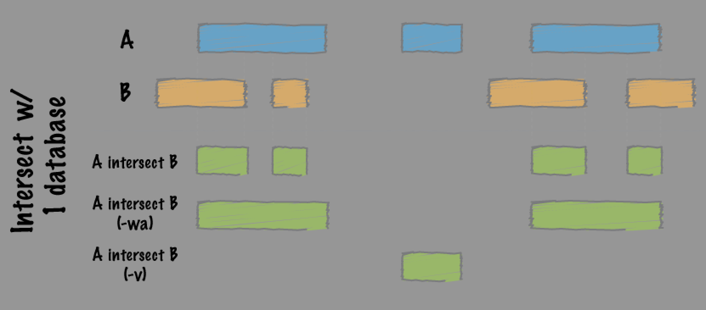
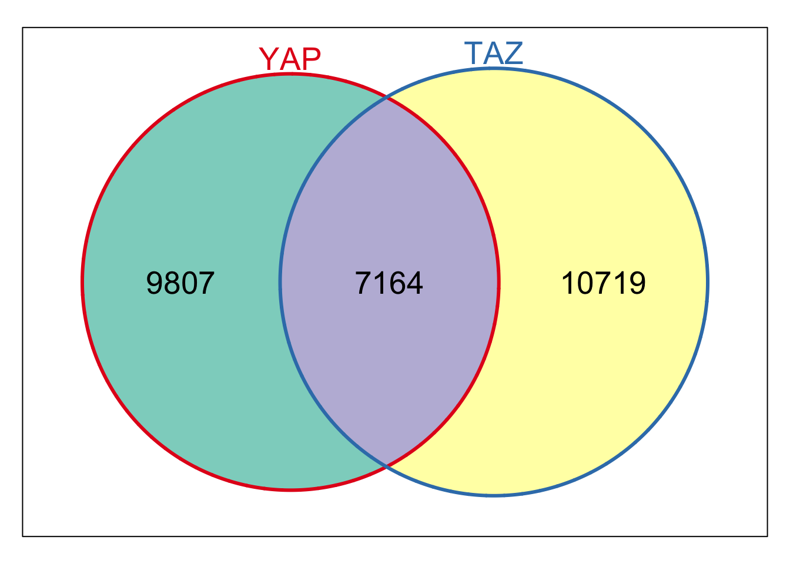
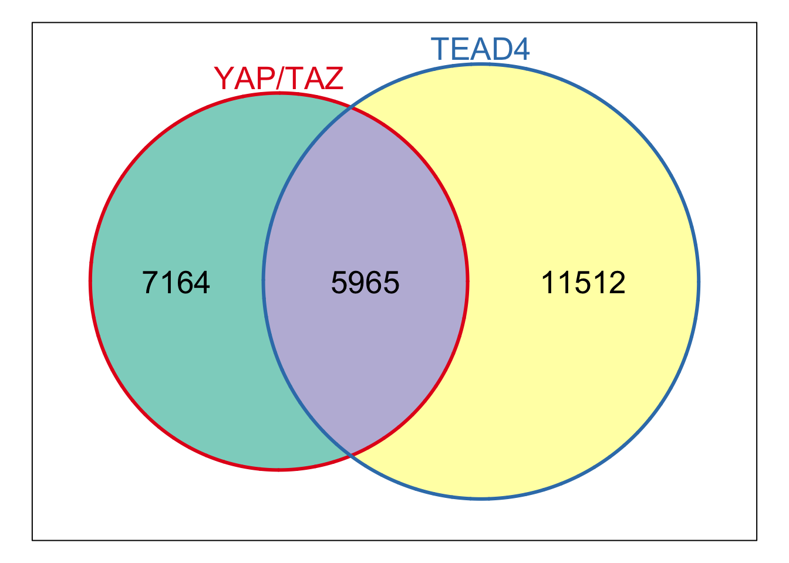
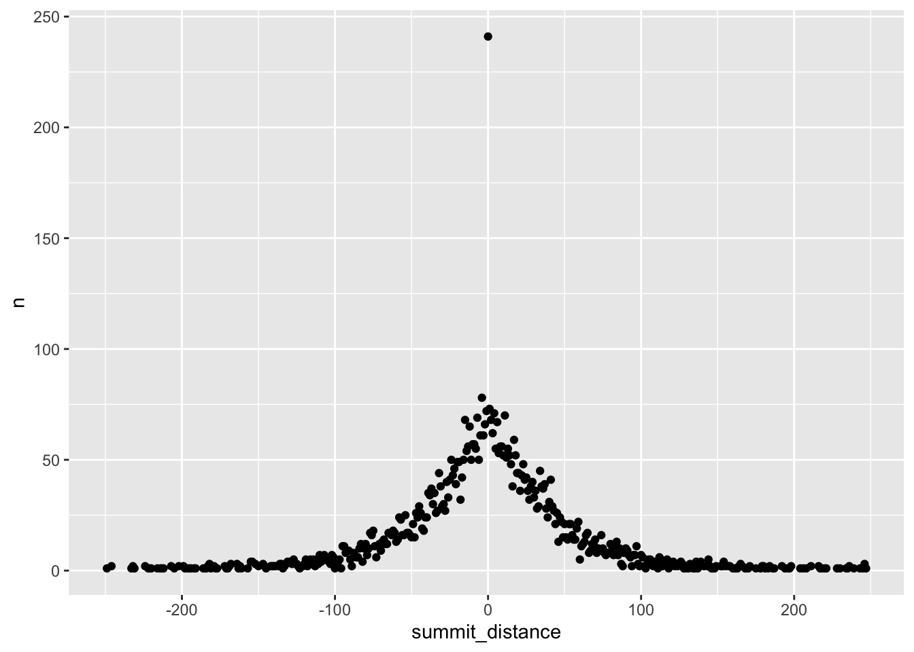
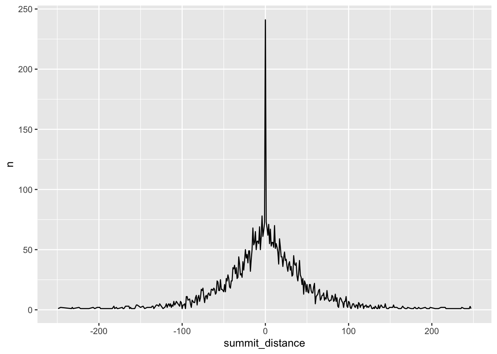

reproduce figure1 a b c
2024-12-27
Last updated: 2025-01-11
Checks: 6 1
Knit directory:
reproduce_genomics_paper_figures/
This reproducible R Markdown analysis was created with workflowr (version 1.7.1). The Checks tab describes the reproducibility checks that were applied when the results were created. The Past versions tab lists the development history.
The R Markdown file has unstaged changes. To know which version of
the R Markdown file created these results, you’ll want to first commit
it to the Git repo. If you’re still working on the analysis, you can
ignore this warning. When you’re finished, you can run
wflow_publish to commit the R Markdown file and build the
HTML.
Great job! The global environment was empty. Objects defined in the global environment can affect the analysis in your R Markdown file in unknown ways. For reproduciblity it’s best to always run the code in an empty environment.
The command set.seed(20241226) was run prior to running
the code in the R Markdown file. Setting a seed ensures that any results
that rely on randomness, e.g. subsampling or permutations, are
reproducible.
Great job! Recording the operating system, R version, and package versions is critical for reproducibility.
Nice! There were no cached chunks for this analysis, so you can be confident that you successfully produced the results during this run.
Great job! Using relative paths to the files within your workflowr project makes it easier to run your code on other machines.
Great! You are using Git for version control. Tracking code development and connecting the code version to the results is critical for reproducibility.
The results in this page were generated with repository version 44ade10. See the Past versions tab to see a history of the changes made to the R Markdown and HTML files.
Note that you need to be careful to ensure that all relevant files for
the analysis have been committed to Git prior to generating the results
(you can use wflow_publish or
wflow_git_commit). workflowr only checks the R Markdown
file, but you know if there are other scripts or data files that it
depends on. Below is the status of the Git repository when the results
were generated:
Ignored files:
Ignored: .DS_Store
Ignored: .Rproj.user/
Ignored: analysis/.DS_Store
Ignored: analysis/figure/
Ignored: data/fastq/
Ignored: data/public_data/
Ignored: data/reference/
Unstaged changes:
Modified: .gitignore
Modified: analysis/04_figure1_a_b_c.Rmd
Note that any generated files, e.g. HTML, png, CSS, etc., are not included in this status report because it is ok for generated content to have uncommitted changes.
These are the previous versions of the repository in which changes were
made to the R Markdown (analysis/04_figure1_a_b_c.Rmd) and
HTML (docs/04_figure1_a_b_c.html) files. If you’ve
configured a remote Git repository (see ?wflow_git_remote),
click on the hyperlinks in the table below to view the files as they
were in that past version.
| File | Version | Author | Date | Message |
|---|---|---|---|---|
| Rmd | a1bdd91 | crazyhottommy | 2025-01-04 | update |
| html | a1bdd91 | crazyhottommy | 2025-01-04 | update |
| Rmd | c9a4ca2 | crazyhottommy | 2024-12-31 | version 0.1 |
| html | c9a4ca2 | crazyhottommy | 2024-12-31 | version 0.1 |
Now the fun starts as we finished all the pre-processing steps. Let’s recreate the figure 1a,b,c!
 ### Figure 1a
Figure 1a and 1b are venn-diagram showing the overlapping peak number of YAP/TAZ and YAP/TAZ/TEAD4
To find overlap/intersection of genomic regions, one can use the
famous bedtools
on command line or use GenomicRanges in R.
Let’s try bedtools first.
conda install bedtoolsThe most frequently used command is the bedtools intersect
command.

cd data/fatstq
bedtools intersect -a TAZ_peak/TAZ_peaks.narrowPeak -b YAP_peak/YAP_peaks.narrowPeak -wa | wc -l
7199
There are 7199 TAZ peaks overlap with YAP1 peaks.
I usually pipe the output to sort | uniq to get the unique TAZ peaks
because there are could be one TAZ peak overlapping with mulitiple YAP1
peaks and it gets repeated in the bedtools output.
bedtools intersect -a TAZ_peak/TAZ_peaks.narrowPeak -b YAP_peak/YAP_peaks.narrowPeak -wa | sort | uniq | wc -l
7154There are 7154 unique TAZ peaks overlap
with YAP1 peaks.
Use GenomicRanges in R
Let’s use R instead with the GenomicRanges package. Read
my blog
post on why we need to learn how to use it.
library(GenomicRanges)
library(rtracklayer) # for reading in bed file
library(here)
TAZ_peaks<- import(here("data/fastq/TAZ_peak/TAZ_peaks.narrowPeak"))
YAP_peaks<- import(here("data/fastq/YAP_peak/YAP_peaks.narrowPeak"))
TAZ_peaks#> GRanges object with 10719 ranges and 6 metadata columns:
#> seqnames ranges strand | name score
#> <Rle> <IRanges> <Rle> | <character> <numeric>
#> [1] chr1 1024631-1025009 * | TAZ_peak_1 496
#> [2] chr1 1079586-1079774 * | TAZ_peak_2 35
#> [3] chr1 1264883-1265653 * | TAZ_peak_3 244
#> [4] chr1 1360608-1360960 * | TAZ_peak_4 349
#> [5] chr1 1659316-1659509 * | TAZ_peak_5 54
#> ... ... ... ... . ... ...
#> [10715] chrX 154596526-154596874 * | TAZ_peak_10715 282
#> [10716] chrX 154600477-154600851 * | TAZ_peak_10716 135
#> [10717] chrX 154604091-154604381 * | TAZ_peak_10717 64
#> [10718] chrX 154732674-154733351 * | TAZ_peak_10718 103
#> [10719] chrX 155888192-155888475 * | TAZ_peak_10719 136
#> signalValue pValue qValue peak
#> <numeric> <numeric> <numeric> <integer>
#> [1] 15.48650 54.10540 49.66990 192
#> [2] 4.00512 6.64940 3.52515 11
#> [3] 11.36980 28.52280 24.49830 167
#> [4] 15.08250 39.17130 34.93810 174
#> [5] 5.41424 8.77757 5.48809 50
#> ... ... ... ... ...
#> [10715] 13.14890 32.33060 28.22330 200
#> [10716] 8.50809 17.30320 13.59470 187
#> [10717] 5.80097 9.75655 6.40776 170
#> [10718] 7.34790 13.93350 10.35880 496
#> [10719] 7.20922 17.34310 13.62840 155
#> -------
#> seqinfo: 28 sequences from an unspecified genome; no seqlengthsYAP_peaks#> GRanges object with 9807 ranges and 6 metadata columns:
#> seqnames ranges strand | name score
#> <Rle> <IRanges> <Rle> | <character> <numeric>
#> [1] chr1 9894-10324 * | YAP_peak_1 81
#> [2] chr1 180610-180805 * | YAP_peak_2 44
#> [3] chr1 1024628-1025059 * | YAP_peak_3 494
#> [4] chr1 1264837-1265155 * | YAP_peak_4 148
#> [5] chr1 1265320-1265695 * | YAP_peak_5 131
#> ... ... ... ... . ... ...
#> [9803] chrX 154600351-154600918 * | YAP_peak_9803 131
#> [9804] chrX 154732680-154732891 * | YAP_peak_9804 58
#> [9805] chrX 154797063-154797337 * | YAP_peak_9805 49
#> [9806] chrX 155888248-155888487 * | YAP_peak_9806 108
#> [9807] chrX 156030280-156030812 * | YAP_peak_9807 370
#> signalValue pValue qValue peak
#> <numeric> <numeric> <numeric> <integer>
#> [1] 2.30543 11.76320 8.16671 159
#> [2] 2.45356 7.78457 4.48630 172
#> [3] 16.37320 54.38830 49.46070 192
#> [4] 8.81841 18.84720 14.89750 188
#> [5] 8.62413 17.00830 13.14010 112
#> ... ... ... ... ...
#> [9803] 8.62413 17.00830 13.14010 417
#> [9804] 5.74942 9.32421 5.89513 78
#> [9805] 5.29420 8.25988 4.92389 140
#> [9806] 6.72473 14.58900 10.84320 151
#> [9807] 2.80955 41.71780 37.07200 273
#> -------
#> seqinfo: 27 sequences from an unspecified genome; no seqlengthsWe have 9807 YAP1 peaks and 10719 TAZ peaks. How many of them overlap?
TAZ_overlap_YAP_peaks<- subsetByOverlaps(TAZ_peaks, YAP_peaks)
length(TAZ_overlap_YAP_peaks)#> [1] 7154YAP_overlap_TAZ_peaks<- subsetByOverlaps(YAP_peaks, TAZ_peaks)
length(YAP_overlap_TAZ_peaks)#> [1] 7164so we have 7154 out of 10719 TAZ peaks overlapping with YAP1 peaks.
(Note, this is the same number we got from
bedtools intersect).
and we have 7164 out of 9807 YAP1 peaks overlapping with TAZ peaks.
The venn-diagram needs a common number in the intersection. How do we deal with it? There are different decisions you can make and it does not affect the conclusion of the figure: most of the TAZ and YAP1 peaks overlap!
We can just use the number of YAP1 peaks that overlap with TAZ as the intersection.
There are many packages to make a venndiagram. I use Vennerable.
# devtools::install_github("js229/Vennerable")
library(Vennerable)
n_YAP <- length(YAP_peaks) # Total peaks
n_TAZ <- length(TAZ_peaks) # Total peaks
n_overlap <- length(YAP_overlap_TAZ_peaks)
venn_data <- Venn(SetNames = c("YAP", "TAZ"),
Weight = c(
"10" = n_YAP, # Unique to A
"01" = n_TAZ, # Unique to B
"11" = n_overlap # Intersection
))
# Plot the Venn diagram
plot(venn_data)
| Version | Author | Date |
|---|---|---|
| c9a4ca2 | crazyhottommy | 2024-12-31 |
You can also use makeVennDiagram in the
ChIPpeakAnno package.
In our case, we already have the number of the two sets and the
intersection, so we used vennerable.
Take a look at ggVennDiagram too
Figure 1b
We can easily make Figure 1b now that we have some foundations.
TEAD4_peak<- import(here("data/fastq/TEAD4_peak/TEAD4_peaks.narrowPeak"))
YAP_overlap_TAZ_peaks_overlap_TEAD4<- subsetByOverlaps(YAP_overlap_TAZ_peaks, TEAD4_peak)
n_YAP_TAZ <- length(YAP_overlap_TAZ_peaks) # Total peaks
n_TEAD4 <- length(TEAD4_peak) # Total peaks
n_overlap2<- length(YAP_overlap_TAZ_peaks_overlap_TEAD4)
venn_data2 <- Venn(SetNames = c("YAP/TAZ", "TEAD4"),
Weight = c(
"10" = n_YAP_TAZ, # Unique to A
"01" = n_TEAD4, # Unique to B
"11" = n_overlap2 # Intersection
))
# Plot the Venn diagram
plot(venn_data2)
| Version | Author | Date |
|---|---|---|
| c9a4ca2 | crazyhottommy | 2024-12-31 |
Figure 1c
This figure requires a little more work. Let’s decompose it.
Description of the figure in the paper:
- Position of TEAD4 peak summits relative to the summits of the overlapping YAP/TAZ peaks, in a 500 bp window surrounding the summit of YAP/TAZ peaks.
TAZ peaks coordinates and summit positions were used to represent common peaks between YAP and TAZ peaks (YAP/TAZ peaks) and were used when comparing YAP/TAZ peaks with other ChIP-seq data.
- data we need: the TAZ peak set and the TEAD4 peak set.
- x-axis: when a TEAD peak overlaps with a TAZ peak, the distance between the summit of the the TAZ peak and the TEAD4 peak summit.
- y-axis: the number of TEAD peaks for each distance
A summit is the highest signal point within a peak.
MACS3 outputs that.
TAZ_summit<- import(here("data/fastq/TAZ_peak/TAZ_summits.bed"))
TAZ_summit<- TAZ_summit[TAZ_summit$name %in% TAZ_overlap_YAP_peaks$name]
TEAD4_summit<- import(here("data/fastq/TEAD4_peak/TEAD4_summits.bed"))
TEAD4_summit#> GRanges object with 11512 ranges and 2 metadata columns:
#> seqnames ranges strand | name score
#> <Rle> <IRanges> <Rle> | <character> <numeric>
#> [1] chr1 1024830 * | TEAD4_peak_1 37.76480
#> [2] chr1 1079611 * | TEAD4_peak_2 5.27663
#> [3] chr1 1265037 * | TEAD4_peak_3 45.50160
#> [4] chr1 1360763 * | TEAD4_peak_4 63.99220
#> [5] chr1 1659345 * | TEAD4_peak_5 6.62232
#> ... ... ... ... . ... ...
#> [11508] chrX 154733092 * | TEAD4_peak_11508 8.50667
#> [11509] chrX 154735953 * | TEAD4_peak_11509 12.54790
#> [11510] chrX 154967772 * | TEAD4_peak_11510 7.62224
#> [11511] chrX 155057497 * | TEAD4_peak_11511 5.24858
#> [11512] chrX 155888353 * | TEAD4_peak_11512 9.30619
#> -------
#> seqinfo: 24 sequences from an unspecified genome; no seqlengthsThey both represent a single base point that has the highest signal in the peaks.
expand the TAZ summit to a 500bp window
TAZ_500bp_window<- resize(TAZ_summit, width = 500, fix="center")
hits<- findOverlaps(TEAD4_summit, TAZ_500bp_window)
# a hits object with the indices of the overlapping query and subject
hits#> Hits object with 5901 hits and 0 metadata columns:
#> queryHits subjectHits
#> <integer> <integer>
#> [1] 1 1
#> [2] 3 2
#> [3] 4 3
#> [4] 5 4
#> [5] 7 6
#> ... ... ...
#> [5897] 11504 7150
#> [5898] 11505 7151
#> [5899] 11506 7152
#> [5900] 11508 7153
#> [5901] 11512 7154
#> -------
#> queryLength: 11512 / subjectLength: 7154summit_distance<- distance(TEAD4_summit[queryHits(hits)], TAZ_summit[subjectHits(hits)])
table(summit_distance)#> summit_distance
#> 0 1 2 3 4 5 6 7 8 9 10 11 12 13 14 15 16 17 18 19
#> 241 145 134 123 149 116 117 122 111 113 109 120 116 111 106 116 88 101 84 93
#> 20 21 22 23 24 25 26 27 28 29 30 31 32 33 34 35 36 37 38 39
#> 93 75 89 91 91 83 69 72 65 70 62 74 72 56 71 73 67 76 62 59
#> 40 41 42 43 44 45 46 47 48 49 50 51 52 53 54 55 56 57 58 59
#> 55 65 47 46 47 55 37 50 37 36 36 31 31 38 46 32 30 37 43 36
#> 60 61 62 63 64 65 66 67 68 69 70 71 72 73 74 75 76 77 78 79
#> 18 28 30 29 33 34 20 21 26 25 23 20 21 15 27 28 24 24 18 15
#> 80 81 82 83 84 85 86 87 88 89 90 91 92 93 94 95 96 97 98 99
#> 24 21 11 20 23 13 16 10 10 10 15 18 7 14 13 18 8 16 7 6
#> 100 101 102 103 104 105 106 107 108 109 110 111 112 113 114 115 116 117 118 119
#> 8 12 9 4 7 10 11 10 7 8 11 4 10 7 7 7 9 9 3 8
#> 120 121 122 123 124 125 126 127 128 129 130 131 132 133 134 135 136 137 139 140
#> 6 6 2 4 4 6 4 8 4 1 6 5 6 4 2 4 7 3 6 2
#> 141 142 143 144 145 146 147 148 149 150 152 153 154 155 157 158 160 161 162 163
#> 4 2 2 5 3 3 4 1 2 2 5 2 8 6 3 2 1 2 3 2
#> 164 165 166 168 169 170 171 172 175 177 178 179 180 181 182 183 184 185 186 187
#> 5 3 2 4 3 2 3 2 1 1 2 4 2 2 3 3 3 1 2 1
#> 191 192 194 195 196 197 198 199 202 204 205 206 207 208 211 212 213 214 216 217
#> 1 3 2 1 2 1 3 2 2 1 1 1 2 1 2 1 1 1 3 1
#> 218 220 221 222 224 228 230 231 232 233 234 235 236 239 243 245 246 247 249
#> 1 2 2 1 2 1 1 1 2 1 1 1 2 1 1 1 5 1 1TEAD4_summit[queryHits(hits)][summit_distance ==0]#> GRanges object with 241 ranges and 2 metadata columns:
#> seqnames ranges strand | name score
#> <Rle> <IRanges> <Rle> | <character> <numeric>
#> [1] chr1 8137853 * | TEAD4_peak_29 15.8382
#> [2] chr1 17128622 * | TEAD4_peak_91 30.2536
#> [3] chr1 26351760 * | TEAD4_peak_141 28.7604
#> [4] chr1 27538961 * | TEAD4_peak_154 35.3297
#> [5] chr1 31576032 * | TEAD4_peak_180 15.1534
#> ... ... ... ... . ... ...
#> [237] chr9 124659491 * | TEAD4_peak_11273 20.8842
#> [238] chrX 101208246 * | TEAD4_peak_11442 10.7734
#> [239] chrX 120120430 * | TEAD4_peak_11469 31.8595
#> [240] chrX 120734965 * | TEAD4_peak_11472 22.8128
#> [241] chrX 152896547 * | TEAD4_peak_11501 26.4184
#> -------
#> seqinfo: 24 sequences from an unspecified genome; no seqlengthsTAZ_summit[subjectHits(hits)][summit_distance ==0]#> GRanges object with 241 ranges and 2 metadata columns:
#> seqnames ranges strand | name score
#> <Rle> <IRanges> <Rle> | <character> <numeric>
#> [1] chr1 8137853 * | TAZ_peak_28 18.2561
#> [2] chr1 17128622 * | TAZ_peak_83 24.3522
#> [3] chr1 26351761 * | TAZ_peak_125 34.6508
#> [4] chr1 27538962 * | TAZ_peak_139 22.6101
#> [5] chr1 31576031 * | TAZ_peak_166 34.7791
#> ... ... ... ... . ... ...
#> [237] chr9 124659490 * | TAZ_peak_10496 8.61708
#> [238] chrX 101208245 * | TAZ_peak_10652 6.40776
#> [239] chrX 120120431 * | TAZ_peak_10678 20.78260
#> [240] chrX 120734964 * | TAZ_peak_10683 10.32590
#> [241] chrX 152896547 * | TAZ_peak_10711 13.43570
#> -------
#> seqinfo: 28 sequences from an unspecified genome; no seqlengthsThe built-in distance function returns the pair-wise
distance in absolute value.
Let’s revise it to return negative values when TEAD4 summit precede the TAZ summit and positive values when TEAD4 summit follows TAZ summit.
# Compute signed distances
signed_distance <- function(A, B) {
# Compute unsigned distance
dist <- distance(A, B)
# Determine signs based on whether A precedes or follows B
sign <- ifelse(start(A) < start(B), -1, 1)
# Apply sign to distance
dist * sign
}library(dplyr)
library(ggplot2)
summit_distance<- signed_distance(TEAD4_summit[queryHits(hits)],
TAZ_summit[subjectHits(hits)])
distance_df<- table(summit_distance) %>%
tibble::as_tibble()
distance_df#> # A tibble: 383 × 2
#> summit_distance n
#> <chr> <int>
#> 1 -249 1
#> 2 -246 2
#> 3 -233 1
#> 4 -232 2
#> 5 -231 1
#> 6 -224 2
#> 7 -222 1
#> 8 -221 1
#> 9 -220 1
#> 10 -216 1
#> # ℹ 373 more rowsLet’s plot!!
distance_df %>%
ggplot(aes(x=summit_distance, y = n)) +
geom_point()
| Version | Author | Date |
|---|---|---|
| c9a4ca2 | crazyhottommy | 2024-12-31 |
Hmm, something is off… the summit distance on the x-axis needs to be reordered
distance_df %>%
mutate(summit_distance = as.numeric(summit_distance)) %>%
arrange(summit_distance) %>%
ggplot(aes(x=summit_distance, y = n)) +
geom_point()
| Version | Author | Date |
|---|---|---|
| c9a4ca2 | crazyhottommy | 2024-12-31 |
Let’s connect the points with a line:
distance_df %>%
mutate(summit_distance = as.numeric(summit_distance)) %>%
arrange(summit_distance) %>%
ggplot(aes(x=summit_distance, y = n)) +
geom_line()
| Version | Author | Date |
|---|---|---|
| c9a4ca2 | crazyhottommy | 2024-12-31 |
The plot looks too wigglely. Let’s smooth it by average the number of peaks per 5 bp bin.
df_binned <- distance_df %>%
mutate(summit_distance = as.numeric(summit_distance)) %>%
arrange(summit_distance) %>%
mutate(bin = floor(summit_distance / 5) * 5) %>% # Create bins by grouping every 5 bp
group_by(bin) %>%
summarise(n = mean(n, na.rm = TRUE)) # Calculate average 'n' for each binmutate(bin = floor(summit_distance / 5) * 5):
Groups summit_distance values into 5 bp bins by dividing by 5, taking the floor (rounding down), and multiplying back by 5 to get the bin lower bound.
# View the binned dataframe
print(df_binned)#> # A tibble: 97 × 2
#> bin n
#> <dbl> <dbl>
#> 1 -250 1.5
#> 2 -235 1.33
#> 3 -225 1.33
#> 4 -220 1
#> 5 -215 1
#> 6 -210 2
#> 7 -205 1.5
#> 8 -200 1.33
#> 9 -195 1
#> 10 -190 1
#> # ℹ 87 more rowsdf_binned %>%
ggplot(aes(x=bin, y = n)) +
geom_line() +
scale_x_continuous(breaks = c(-250, 0, 250)) +
xlab("distance to the summit \nof TAZ peaks (bp)") +
ylab("peak density") +
theme_classic(base_size = 14) 
| Version | Author | Date |
|---|---|---|
| c9a4ca2 | crazyhottommy | 2024-12-31 |
Tip: how do I what packages to use? google “plotting genome tracks bioconductor” or ask ChatGPT!!
sessionInfo()#> R version 4.4.1 (2024-06-14)
#> Platform: aarch64-apple-darwin20
#> Running under: macOS Sonoma 14.1
#>
#> Matrix products: default
#> BLAS: /Library/Frameworks/R.framework/Versions/4.4-arm64/Resources/lib/libRblas.0.dylib
#> LAPACK: /Library/Frameworks/R.framework/Versions/4.4-arm64/Resources/lib/libRlapack.dylib; LAPACK version 3.12.0
#>
#> locale:
#> [1] en_US.UTF-8/en_US.UTF-8/en_US.UTF-8/C/en_US.UTF-8/en_US.UTF-8
#>
#> time zone: America/New_York
#> tzcode source: internal
#>
#> attached base packages:
#> [1] stats4 stats graphics grDevices utils datasets methods
#> [8] base
#>
#> other attached packages:
#> [1] ggplot2_3.5.1 dplyr_1.1.4 Vennerable_3.1.0.9000
#> [4] here_1.0.1 rtracklayer_1.64.0 GenomicRanges_1.56.1
#> [7] GenomeInfoDb_1.40.1 IRanges_2.38.1 S4Vectors_0.42.1
#> [10] BiocGenerics_0.50.0 workflowr_1.7.1
#>
#> loaded via a namespace (and not attached):
#> [1] tidyselect_1.2.1 farver_2.1.2
#> [3] Biostrings_2.72.1 bitops_1.0-8
#> [5] fastmap_1.2.0 RCurl_1.98-1.16
#> [7] GenomicAlignments_1.40.0 promises_1.3.0
#> [9] XML_3.99-0.17 digest_0.6.36
#> [11] lifecycle_1.0.4 processx_3.8.4
#> [13] magrittr_2.0.3 compiler_4.4.1
#> [15] rlang_1.1.4 sass_0.4.9
#> [17] tools_4.4.1 utf8_1.2.4
#> [19] yaml_2.3.10 knitr_1.48
#> [21] labeling_0.4.3 S4Arrays_1.4.1
#> [23] curl_5.2.1 DelayedArray_0.30.1
#> [25] plyr_1.8.9 RColorBrewer_1.1-3
#> [27] abind_1.4-5 BiocParallel_1.38.0
#> [29] withr_3.0.0 grid_4.4.1
#> [31] fansi_1.0.6 git2r_0.35.0
#> [33] colorspace_2.1-1 scales_1.3.0
#> [35] SummarizedExperiment_1.34.0 cli_3.6.3
#> [37] rmarkdown_2.27 crayon_1.5.3
#> [39] generics_0.1.3 rstudioapi_0.16.0
#> [41] httr_1.4.7 reshape2_1.4.4
#> [43] rjson_0.2.22 cachem_1.1.0
#> [45] stringr_1.5.1 zlibbioc_1.50.0
#> [47] parallel_4.4.1 XVector_0.44.0
#> [49] restfulr_0.0.15 matrixStats_1.3.0
#> [51] vctrs_0.6.5 Matrix_1.7-0
#> [53] jsonlite_1.8.8 callr_3.7.6
#> [55] RBGL_1.80.0 jquerylib_0.1.4
#> [57] glue_1.7.0 codetools_0.2-20
#> [59] ps_1.7.7 stringi_1.8.4
#> [61] gtable_0.3.5 later_1.3.2
#> [63] BiocIO_1.14.0 UCSC.utils_1.0.0
#> [65] munsell_0.5.1 tibble_3.2.1
#> [67] pillar_1.9.0 htmltools_0.5.8.1
#> [69] graph_1.82.0 GenomeInfoDbData_1.2.12
#> [71] R6_2.5.1 rprojroot_2.0.4
#> [73] evaluate_0.24.0 Biobase_2.64.0
#> [75] lattice_0.22-6 highr_0.11
#> [77] Rsamtools_2.20.0 httpuv_1.6.15
#> [79] bslib_0.8.0 Rcpp_1.0.13
#> [81] SparseArray_1.4.8 whisker_0.4.1
#> [83] xfun_0.46 fs_1.6.4
#> [85] MatrixGenerics_1.16.0 getPass_0.2-4
#> [87] pkgconfig_2.0.3